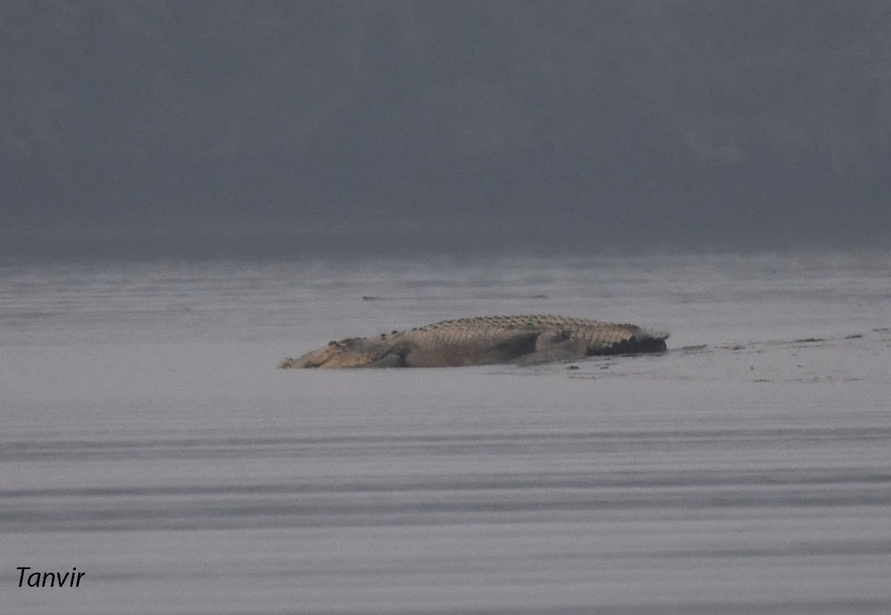

| Class | Order | Family |
|---|---|---|
| Reptilia | Crocodylia | Crocodylidae |
It is the largest and longest existing reptile in the world. An adult male can reach up to 7 m with 1000 kg body weight. Female are smaller than the male and usually attain less than 3 m. Dorsal color of the body is dark gray or brownish gray with a series of longitudinal line of black spot. Ventral part is white or yellowish. Tail laterally compressed with saw-toothed fringed on the top. It consists of a heavy jaw with 17-19 teeth on each side. The fourth tooth on each side of the lower jaw is enlarged and remain into a notch on the opposite jaw. The forelimb has partially webbed 5 fingers and the hind limb has broadly webbed 4 toes.
এটি বিশ্বের বৃহত্তম এবং দীর্ঘতম বিদ্যমান সরীসৃপ। একজন প্রাপ্তবয়স্ক পুরুষ ১০০০ কেজি শরীরের ওজন সহ ৭ মিটার পর্যন্ত লম্বা হতে পারে। মহিলারা পুরুষের চেয়ে ছোট এবং সাধারণত 3 মিটারের কম হয়। শরীরের পৃষ্ঠীয় রঙ গাঢ়-ধূসর বা বাদামী-ধূসর এবং কালো দাগের অনুদৈর্ঘ্য রেখার একটি সিরিজ থাকে। পেটের অংশ সাদা বা হলুদাভ। লেজ পাশ্বীয় ভাবে চাপা এবং উপরের দিকে করাতের দাঁতের ন্যায় অংশ রয়েছে। এদের প্রতিটি শক্ত চোয়াল ১৭-১৯ টি নিয়ে গঠিত। নীচের চোয়ালের প্রতিটি পাশের চতুর্থ দাঁতটি বড় হয় এবং মুখ বন্ধ অবস্থায় বিপরীত চোয়ালে একটি খাঁজে ঢুকে থাকে। অগ্র পা আংশিকভাবে লেপ্টানো ৫ টি আঙ্গুল এবং পিছনের পা হাঁসের ন্যায় বিস্তৃতভাবে লেপ্টানো 4টি আঙ্গুল নিয়ে গঠিত।
They inhabit brackish water of coastal areas, rivers of the coast, and mangrove swamps. Feed on monkey, deer, wild boar, domestic livestock even human. Large crocodiles often cannibalize juveniles. Juveniles feed on insects, amphibians, crustaceans, small reptiles, birds and fishes. They maintain territory and warn introducers with roar, grunt and cough. They guard their breeding territory and nest. The nest is built with plant parts on a muddy place. The female lays 60-80 eggs, I nest usually between November and March. Eggs hatch in 90 days. Sex determination is related to nest temperature. Mother aggressively guard the nest and carries hatchlings in the mouth. Male becomes sexually adult at about 16 years and female at 10-12.
তারা উপকূলীয় অঞ্চলের লোনা পানি, উপকূলের নদী এবং ম্যানগ্রোভ জলাভূমিতে বাস করে। বানর, হরিণ, বন্য শুয়োর, গৃহপালিত পশু এমনকি মানুষকে খাদ্য খাদ্য হিসেবে গ্রহণ করে। বড় কুমির প্রায়শই বাচ্চা কুমিরদের খেয়ে ফেলে। অন্য দিকে কিশোররা পোকামাকড়, উভচর, ক্রাস্টেসিয়ান, ছোট সরীসৃপ, পাখি এবং মাছ খায়। কুমির নিজেদের এলাকা বজায় রাখে এবং গর্জন, কণ্ঠনালী এবং কাশি দিয়ে অনুপ্রবেশকারীকে সতর্ক করে। তারা তাদের প্রজনন অঞ্চল এবং বাসা রক্ষা করে। এরা কর্দমাক্ত জায়গায় গাছের ডাল দিয়ে বাসা তৈরি করা হয়। স্ত্রী ৬০-৮০টি ডিম পাড়ে।তারা সাধারণত নভেম্বর থেকে মার্চের মধ্যে বাসা বাঁধে। ৯০ দিনে ডিম ফুটে। লিঙ্গ নির্ধারণ বাসার তাপমাত্রার সাথে সম্পর্কিত। মা আক্রমনাত্মকভাবে বাসা পাহারা দেয় এবং মুখে বাচ্চা বহন করে। পুরুষ ১৬ বছর বয়সে এবং মহিলা ১০-১২ বছর বয়সে যৌনভাবে প্রাপ্তবয়স্ক হয়।
India, Sri Lanka, Australia, Brunei, Myanmar, Palau, Indonesia, Malaysia, Singapore, Papua New Guinea, Philippines, Solomon Islands, Thailand and Vietnam.
ভারত, শ্রীলঙ্কা, অস্ট্রেলিয়া, ব্রুনাই, মায়ানমার, পালাউ, ইন্দোনেশিয়া, মালয়েশিয়া, সিঙ্গাপুর, পাপুয়া নিউ গিনি, ফিলিপাইন, সলোমন দ্বীপপুঞ্জ, থাইল্যান্ড এবং ভিয়েতনাম
Sundarbans mangrove swamps is considered as the last remining habitat for the species in Bangladesh..
সুন্দরবনের ম্যানগ্রোভ জলাভূমিকে বাংলাদেশে লোনাপানির কুমিরের জন্য শেষ আবাসস্থল হিসাবে বিবেচনা করা হয়।